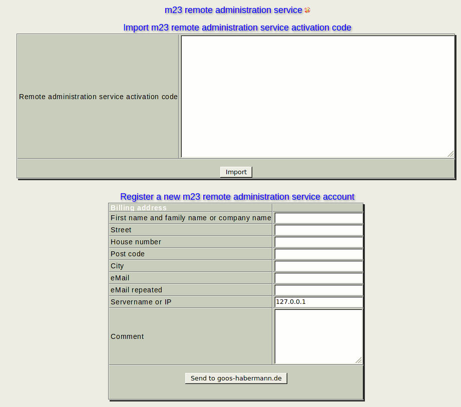

The m23 remote administration service is a paid service of goos-habermann.de, where the support persons of goos-habermann.de can access your m23-server(s) to help you with your administration tasks. For further information about the m23 remote administration service and our tariffs and the general terms and conditions, please refer to goos-habermann.de.

Subsections
root
2017-01-05